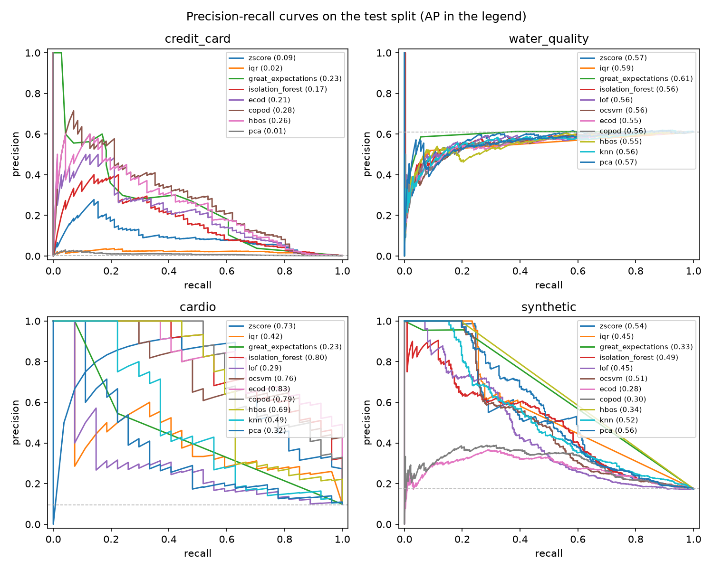
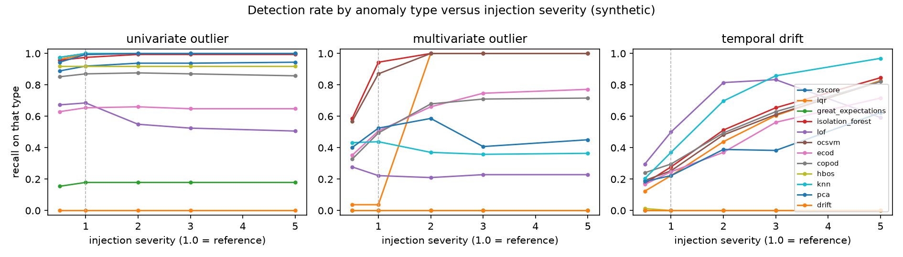
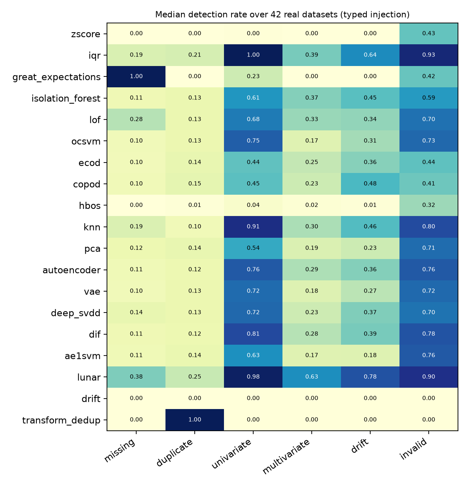

Anomaly detection for data quality, measured inside the ETL pipeline
Living progress deck. Rule-based, classical and first deep detectors run through one pipeline and are compared per anomaly type, on a synthetic generator and on 42 real tables with injected anomalies.
- AuthorTheo Bigand · updated 2026-10-21
- Repositorygithub.com/theobigand/etl-anomaly-benchmark
- Code1,150 tests · 100% line and branch coverage · 97.75% mutants killed
- Datasetspool of 152 open sets · Credit Card, Cardio, Water Quality · synthetic, 6 anomaly types
Does machine learning in an ETL pipeline beat plain rules, and for which anomalies?
The industry default is rule-based: auditable, cheap, and blind to what the author did not anticipate. Recent work adds ML detectors inside the flow, but the evidence is thin, one algorithm on one dataset. This thesis builds the missing head-to-head benchmark and breaks the result down by anomaly type.
What generic anomaly benchmarks leave out
- evaluated in a vacuumAlgorithms scored outside any pipeline, no integration cost measured.
- no declarative baselineThe rules that dominate production are never in the comparison.
- one aggregate score per datasetHiding which family is good at which kind of defect.
- a single flag thresholdReported as one operating point, not the precision-recall trade-off.
A controlled dataset that labels six anomaly types separately
12,360 records generated with Faker and NumPy, six types injected at 3% each, every row tagged with its category. Recall and precision are reported per type. The magnitudes are one severity multiplier, so the choice is swept rather than fixed.
- missing value
- one or two feature cells set to null
- exact duplicate
- a clean row copied, same business attributes
- univariate outlier
- one numeric field pushed far out of range
- multivariate outlier
- every field in range, the combination not (an 18-year-old with a top-percentile balance)
- temporal drift
- recent-signup rows whose income and balance distribution has shifted up
- invalid format
- malformed e-mail, out-of-domain country code, impossible age
Because the category of every injected row is known, the benchmark reports a recall and a precision per type: the part that generic anomaly benchmarks, which publish one aggregate score, do not provide.
One interface, one measured path
The demo and every benchmark call the same detect()
stage, so latency is the real in-pipeline fit + predict + score time. A continuous
score() on top of the boolean predict() makes ROC-AUC and
PR-AUC computable; detect(fit_df=...) fits on the train slice and scores
the test set.
# every detector, one contract class Detector(ABC): name: str def fit(self, df) -> Self: ... def predict(self, df) -> Series: # bool per row ... def score(self, df) -> Series: # graded score return self.predict(df).astype(float) # classical ML: adapt PyOD, do not reimplement class PyODDetector(Detector): def fit(self, df): x = impute(df[self.numeric_cols]) self.model = self.estimator.fit(scale(x)) return self # registry: one line, picked up everywhere "isolation_forest": lambda: IsolationForestDetector(),
Seven detectors, one contract
Classical ML detectors are wrapped from PyOD, not reimplemented.
The flag threshold is read from the train-set prevalence. The time-aware
drift detector is opt-in and runs on the synthetic dataset only. Deep
learning (Autoencoder, LSTM-Autoencoder) is M2.
| Detector | Family | Principle | Main limit |
|---|---|---|---|
| Z-score | statistical rule | flag |z| > 3 on any column | mean and std inflated by outliers |
| IQR | statistical rule | Tukey fences, k = 1.5 | any-column rule fires often in high dim |
| Great Expectations | declarative rule | not-null + range at 0.1 / 99.9 pct | only checks what the suite declares |
| Isolation Forest | classical ML | isolation depth under random splits | axis-aligned splits, weak on nulls |
| Local Outlier Factor | classical ML | local density vs 20 neighbours | scoring cost grows with the scored set |
| One-Class SVM | classical ML | RBF boundary around the bulk | quadratic training |
| drift | time-aware | recent-window mean shift, per-row lean | per-row, so diluted drift is invisible |
Three real settings bracket the method
Stratified 70 / 15 / 15 split, fit on train, every number reported on the held-out test set. Five seeds, mean ± std. The ML contamination is read from the train-set prevalence, not fixed at 10%.
| Dataset | Rows | Feat. | Anom. | Role |
|---|---|---|---|---|
| Credit Card Fraud | 283,726 | 30 | 0.17% | rare, but a mixed-defect label |
| Cardio | 1,831 | 21 | 9.6% | rare and outlying, the fitting regime |
| Water Quality | 3,276 | 9 | 61% | target class common, wrong regime |
| Synthetic per-type | 12,360 | 9 | 17.5% | controlled, 6 labelled types |
Magnitudes are a swept parameter, not a fixed choice
severity = 1.0 is the reference dataset. Missing values, duplicates and invalid formats have no magnitude to scale. The severity sweep (slide 15) turns "we picked the magnitudes" into a curve and shows the per-type ranking is stable. Five types replace clean rows; duplicates are appended.
- missing value
- 1–2 of {income, balance, avg amount, tenure, n txn, email, country} → null
- duplicate
- exact copy of a sampled clean row, id included
- univariate
- one numeric column × U(15, 45) × severity
- multivariate
- marginals at the (1 − 0.03 / severity) percentile of the clean data
- temporal drift
- signup in the last 80 days; income × (1 + 0.55 · severity), similar for balance and amount
- invalid format
- email → malformed; age → impossible; country → out of domain
At severity = 1 these are the reference magnitudes.
Sweeping the multiplier (slide 15) shows every distributional detector's recall on
univariate, multivariate and drift rises smoothly, and the ranking does not change.
Aggregate metrics say the detector families are interchangeable. Per anomaly type, they are not.
The operating point decides the outcome
The statistical rules recover most frauds at precision below 0.04. Isolation Forest changes once its contamination matches the prevalence: it flags 0.17% of rows and reaches the first usable precision, at recall 0.21 and with real seed variance (F1 = 0.20 ± 0.07). Great Expectations leads PR-AUC.
| Detector | Prec | Rec | F1 | ROC | PR | Flag% | Time |
|---|---|---|---|---|---|---|---|
| Z-score | 0.011 | 0.870 | 0.021 | 0.926 | 0.078 | 13.4 | 0.03s |
| IQR | 0.003 | 0.966 | 0.007 | 0.911 | 0.018 | 48.6 | 0.12s |
| Great Expectations | 0.037 | 0.676 | 0.070 | 0.830 | 0.182 | 3.1 | 1.37s |
| Isolation Forest | 0.202 | 0.206 | 0.203 | 0.934 | 0.120 | 0.2 | 1.78s |
When anomalies are rare and outlying, the learned detectors work
Isolation Forest reaches F1 0.62 and PR-AUC 0.70. Z-score also does well: the 21 features are standardized and anomalies stand out on several at once. This is the counterpoint to a 0.17% mixed label and a 61% majority.
| Detector | Prec | Rec | F1 | ROC | PR | Flag% |
|---|---|---|---|---|---|---|
| Z-score | 0.49 | 0.82 | 0.61 | 0.93 | 0.61 | 16.6 |
| IQR | 0.21 | 0.90 | 0.34 | 0.78 | 0.30 | 43.4 |
| Great Expectations | 0.51 | 0.21 | 0.29 | 0.59 | 0.19 | 4.6 |
| Isolation Forest | 0.64 | 0.62 | 0.62 | 0.95 | 0.70 | 9.9 |
| LOF | 0.25 | 0.27 | 0.26 | 0.62 | 0.24 | 10.7 |
| One-Class SVM | 0.56 | 0.61 | 0.58 | 0.94 | 0.63 | 10.7 |
Aggregate metrics make the families look interchangeable
Isolation Forest has the best F1; no family is clearly ahead. Z-score keeps a perfect precision by firing only on the most extreme rows. One-Class SVM matches Isolation Forest at about 16× the latency.
| Detector | Prec | Rec | F1 | ROC | PR | Time |
|---|---|---|---|---|---|---|
| rule-based | ||||||
| Z-score | 1.000 | 0.182 | 0.308 | 0.748 | 0.560 | 0.002s |
| IQR | 0.603 | 0.399 | 0.481 | 0.678 | 0.460 | 0.004s |
| Great Expectations | 0.920 | 0.205 | 0.335 | 0.601 | 0.332 | 0.29s |
| classical ML | ||||||
| Isolation Forest | 0.515 | 0.503 | 0.509 | 0.745 | 0.501 | 0.16s |
| Local Outlier Factor | 0.380 | 0.390 | 0.385 | 0.646 | 0.437 | 0.14s |
| One-Class SVM | 0.488 | 0.478 | 0.483 | 0.729 | 0.531 | 2.61s |
Each method has a narrow competence
Z-score owns univariate outliers. Great Expectations owns missing values (recall 1.00, precision 0.90). Deduplication owns exact duplicates. Isolation Forest and One-Class SVM are the only methods that catch multivariate outliers. Broad coverage needs several families, not the single best one.

Detection rate alone can be gamed
Isolation Forest catches 91% of multivariate outliers at only 0.24 precision: a wide net that also pulls in clean rows. Z-score fires only when it is certain, so its precision is 1.00 on the two columns it covers.
| Method | missing | univ. out. | multiv. out. | drift | ||||
|---|---|---|---|---|---|---|---|---|
| rec | prec | rec | prec | rec | prec | rec | prec | |
| Z-score | 0.00 | – | 0.92 | 1.00 | 0.00 | – | 0.00 | – |
| IQR | 0.05 | 0.03 | 0.99 | 0.39 | 0.02 | 0.01 | 0.27 | 0.15 |
| Great Expectations | 1.00 | 0.90 | 0.23 | 0.70 | 0.00 | – | 0.00 | – |
| Isolation Forest | 0.09 | 0.03 | 0.99 | 0.26 | 0.91 | 0.24 | 0.33 | 0.10 |
| LOF | 0.26 | 0.06 | 0.65 | 0.15 | 0.16 | 0.04 | 0.49 | 0.11 |
| One-Class SVM | 0.08 | 0.03 | 0.99 | 0.25 | 0.84 | 0.22 | 0.34 | 0.10 |
| transform dedup | 0.00 | – | 0.00 | – | 0.00 | – | 0.00 | – |
One threshold hides the whole trade-off
On Cardio the Isolation Forest and One-Class SVM curves stay high (AP 0.80, 0.76). On Water Quality every curve hugs the 0.61 base-rate line. On Credit Card Fraud two methods dominate but neither clears precision 0.4 except at negligible recall.

The per-type ranking is stable as the magnitudes scale
Univariate outliers are saturated already at severity 0.5. Multivariate outliers show a threshold. Temporal drift climbs roughly linearly for the distributional detectors: the reference drift is simply below every method's floor, not a property of the methods. The same families lead the same columns at every severity.

A pool of 152 open datasets, pinned and checked
Issue #66. The three datasets of M1 bracket the method but are too few to say anything general. The pool follows ADBench in scale and adds a licence rule: a dataset enters only when its terms are read and open. Raw data stays out of the repository; checksums, licences and reports are archived.
- ADBench tabular sets kept (35 CC BY 4.0, 1 ODbL)36 of 47
- UCI sets passing metadata and licence filters133
- UCI sets kept after curation, reason recorded116
- anomaly label rule fixed before any detectorrarest class
- one normalisation policy for all setssingle
- download check of every set, manual and monthly CIpinned
- excluded for unclear terms (celeba, mammography, vowels...)11
The synthetic pattern does not simply carry over
Issue #65. The six anomaly types are injected into 42 real UCI tables (3% of rows per type, same split and settings as the synthetic run). Protocol and five hypotheses were written before any run. Two rows hold everywhere: Great Expectations finds all missing values, deduplication all duplicates. Three hypotheses are not supported.

Two failures that are explained, not hidden
Z-score detects almost nothing on univariate outliers (median 0.00 against 0.93 synthetic). A check made after seeing it, so exploratory, shows why: invalid rows in the training split inflate the standard deviation. Without them the Z-score finds every univariate outlier on all 42 tables. The IQR fences reach the best detection rate on several types, but only by flagging a median 22% of clean rows.
- maskingNon-robust statistics on a contaminated training set, not a weakness of the Z-score as such.
- detection rate can be gamedThe false positive rate on clean rows has to be read next to it. It reaches 99% on some wide tables.
- stable rankingRank correlation of the method-by-type matrices is 0.83, lowest for drift (0.70). Partly mechanical: many cells sit near 0 or 1.
- dimension hurtsIsolation Forest on univariate outliers falls as the number of continuous columns grows.
Time changes the answer: a threshold from training does not travel
Credit Card is the only dataset with a clock. Detectors are fitted on the first 70% of time and scored on the last 15% (52 frauds). Average precision drops for all four detectors, but the interval excludes the stratified mean only for Great Expectations and Isolation Forest. Prevalence also changes between partitions, so the pilot does not separate it from the effect of time.
| Detector | PR strat. | PR chrono | ROC chrono | Flag% |
|---|---|---|---|---|
| Z-score | 0.078 | 0.048 | 0.935 | 12.8 |
| IQR | 0.018 | 0.013 | 0.917 | 47.1 |
| Great Expectations | 0.183 | 0.045 | 0.758 | 3.5 |
| Isolation Forest | 0.110 | 0.035 | 0.936 | 0.08 |
An LSTM autoencoder is comparable, not clearly better
Issue #52. The window is the ten previous rows of the global stream, since Credit Card has no cardholder. The protocol and a CPU budget of 20 epochs were fixed beforehand. On a synthetic stream with broken continuity the LSTM wins by a wide margin. On the real frauds it only matches Isolation Forest and Great Expectations, and none of five trainings converged within the budget.
- paired bootstrap, main seed+0.021 [+0.005, +0.044]
- other four seedsinterval includes 0
- versus Isolation Forest (0.035), GX (0.045)comparable
- convergence within 20 epochsnot reached
- recall of frauds in the later period≤ 0.02
- deep models in the per-type matrix#64
Detection latency is not pipeline latency
Issue #53. Synthetic matrices from 1,000 to 300,000 rows, a fresh process per measurement so that peak memory belongs to that run, 300 s budget. On the full Credit Card file the Z-score pipeline takes 4.8 s of which detection is 3%, while Isolation Forest takes 8.5 s with detection at 43 to 45%.
| Detector | 10k rows | 100k rows | 300k rows | Memory MB |
|---|---|---|---|---|
| Z-score | 0.002 s | 0.013 s | 0.039 s | 70 |
| IQR | 0.004 s | 0.029 s | 0.086 s | 116 |
| Isolation Forest | 0.16 s | 1.09 s | 3.2 s | 140 |
| Autoencoder (MLP) | 1.5 s | 8.4 s | 12.7 s | 115 |
| LSTM autoencoder | 1.1 s | 5.1 s | 7.3 s | 499 |
| LOF | 0.73 s | 18.0 s | 133 s | 405 |
| One-Class SVM | 5.6 s | >300 s | not run | 788 |
Anomaly type to method
Two of six types are not a per-row detector problem at all: duplicates belong to the transform stage, drift to a windowed monitor. That itself is a finding a single aggregate ranking would never surface.
| Anomaly type | Use | Recall | Why |
|---|---|---|---|
| missing value | Great Expectations | 1.00 | not-null expectation, exact |
| exact duplicate | transform dedup stage | 1.00 | row equality, not a detector's job |
| univariate outlier | any statistical rule | 0.92–0.99 | single-column band is enough |
| multivariate outlier | Isolation Forest | 0.91 | only the joint models see it (precision 0.24) |
| temporal drift | windowed monitor | ≤0.49 | sub-threshold per row; needs a stage |
| invalid format | IQR, partially | 1.00 / none | numeric part caught, string format missed |
Unsupervised detection works in one of three regimes
The question is less "rules or ML" than "does this dataset have rare, outlying anomalies at all". Latency and scaling then constrain which detector can sit in a real flow: Great Expectations is the slowest linear method, and the One-Class SVM and LOF do not survive the full fraud dataset.
too extreme
0.17% positives, and the label mixes every defect. No method reaches a usable precision at reasonable recall.
the fit
9.6%, rare and distinct. Isolation Forest F1 0.62, PR-AUC 0.70. The regime the detectors are built for.
wrong regime
61% majority target. Every ROC-AUC 0.45 to 0.51: the detectors are at chance.
The synthetic dataset sits in the middle at 17.5% and is where the per-type structure is measured. Pipeline cost narrows the shortlist further: Great Expectations is the slowest linear method, and the One-Class SVM and LOF do not survive the full fraud dataset.
Findings from the build
Each of these became a paragraph in the paper. The recurring lesson: the setup around a detector, the operating point, the regime, the pipeline cost, matters as much as the algorithm.
- the operating point is a leverContamination = prevalence instead of a fixed 10% moves Isolation Forest fraud precision from 0.01 to 0.20 and multivariate recall from 0.41 to 0.91.
- one regime out of threeCardio: F1 0.62. Fraud (mixed label): nothing usable. Water Quality (61% majority): at chance.
- GX 1.x is a full API rewritePer-row failures need the COMPLETE result format plus an explicit index column. Figured out by probing the installed library.
- One-Class SVM does not scaleQuadratic training, and LOF scoring is superlinear. On the full fraud dataset only rules and Isolation Forest run.
- ML is weak on missing valuesImputing removes the signal a not-null rule catches for free: GX recall 1.00 against 0.08 to 0.26 for the learned models.
- drift is not a per-row problemOnce diluted by clean recent rows the window mean has moved by about a tenth of a standard deviation.
What the repository holds today
The verification layer was built for the claim that the numbers are right: a test suite, a mutation campaign, deliberate defects and a release script that returns certified, incomplete or blocked. The last local run is not independently attested, and the hosted run certified an earlier revision.
| Check | Result | Scope |
|---|---|---|
| line coverage | 1,628 / 1,628 | pipeline modules and experiment scripts |
| branch coverage | 336 / 336 | same scope |
| mutation, computing code | 95.76% | split, metrics, generator, detectors |
| mutation, input / output | 98.87% | readers, writers, scripts |
| fault injection | 23 / 23 | four went through every earlier test |
| real-data check | pass | three CSV files, manuscript tables match |
Experiments run, write-up and deep rows left
Five of the seven M2 plan items are not closed. The target is an IMRaD paper; the demo paper was dropped. Defense July 2027.
- held-out split, 5 seeds, contamination, CIdone
- chronological pilot, LSTM pilot, cost studydone
- dataset pool of 152 sets (#66)done
- typed injection on 42 real tables (#65)done
- deep rows in the per-type matrix (#64)next
- multi-schema Faker generator (#67)M2
- related work, verified bibliography (#68)M2
- IMRaD restructuring, condensed verification (#69)M2
- decision-level study under temporal shift (#63)M2
Rules and machine learning are complementary by anomaly type.
The per-type heatmap is what makes that choice actionable. Across three real datasets, unsupervised detection pays off only on Cardio, where the anomalies are genuinely rare outliers. On 42 real tables with injected types, the synthetic pattern holds only in part, which is why the real-data matrix is the differentiator. The pipeline, the 152-dataset pool, the protocols and the verification layer are in place. Deep rows in the matrix and the IMRaD write-up are what remains.